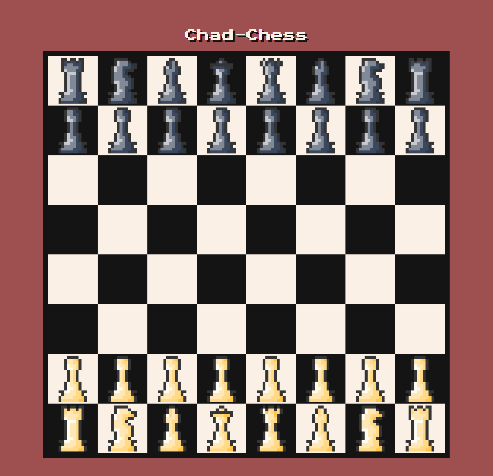
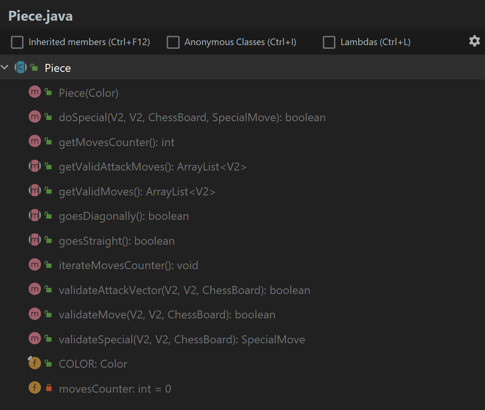

Chess Game is a group project where I contributed the chess logic and some of the front-end (namely the actual game page, login page and lobby page)  Designing the logic I saw my classmates struggle with the logic for ~5 months. So when my team was assigned to work on our own version of the chess game I knew that it was crucial to design the logic in a way that would utilize OOP in a way that would allow me to reuse as much logic as possible for as many pieces as possible. ChessBoard I knew that I would need to start with a class that would serve as the chess board. I wanted this class to store the state of the board and handle all the moves. It would also be the first layer of abstraction towards move validation. Storing board state I decided to have the ChessBoard store a 2D array of Piece objects to represent the state of the board. The pieces themselves wouldn't store any information regarding their position on the board. Instead, the board would pass the piece methods it's position as a parameter. It would also pass itself as a paramer so that the piece could still check certain squares on the board. The reason that the pieces don't store their position is because storing the same information in two different objects is generally a bad practive and could potentially introduce many unnecesary bugs. Color & V2 These are just some utility classes Color stores enums that represent a piece's color. And V2 is short for 2D vector. It'll be used to help methods communicate a piece's position. Piece Piece is an abstract class that defines the interface for each piece in the game.  It has a few important methods that are already implemented:
- validateMove(V2, V2, ChessBoard): boolean Checks whether the piece is allowed to move to a certain field. Automatically checks for attacks too
- validateAttackVector(V2, V2, ChessBoard): boolean Checks whether the piece is allowed to attack a piece in a certain field.
These methods contain universal rules for piece movements. These rules are however affected by the implementing class. A class that extends the Piece class has to implement the abstract classes to specify the pieces' unique behaviours. For example, it specifies the relative distance that a piece can travel, attack, whether the piece can go diagonally or in a straight line. Some pieces can also override some methods pertaining to special moves to specify their special move logic. Special moves Special moves were a bit tricky to implement because they all have radically different logic and each one needs it's unique logic code. After some brainstorming, I ended up with the validateSpecial() method that is called from within the ChessBoard.move() method. It returns false by default, but can be overridden by extending classes to add their unique validation logic. The reason it's implemented in the abstract Piece class is just because not every piece has special moves and implementing it in the Piece class helps keep individual piece classes from unnecesary boilerplate. When validateSpecial() returns true, the ChessBoard.move() method calls doSpecial() and it does whatever the special move requires. I'm a little unhappy with this implementation because it requires that ChessBoard allows the pieces on the board to be manipulated externally (By doSpecial()) Front-end There's not much to say about the front-end. It just works ¯\_(ツ)_/¯
PLAY CHAD-CHESS